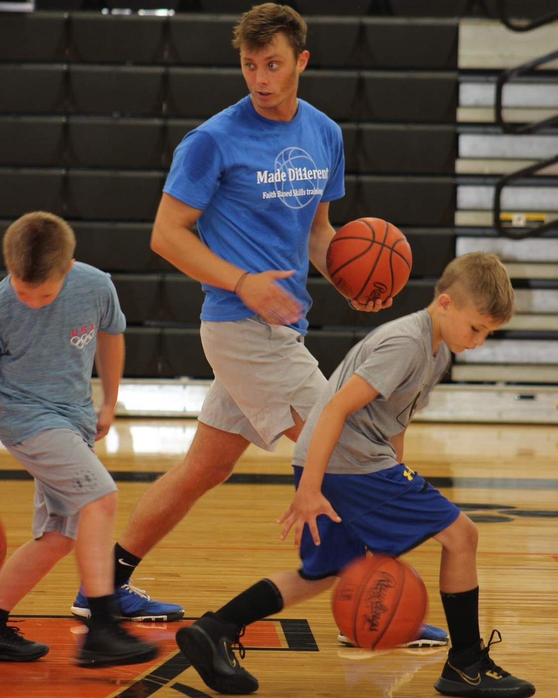
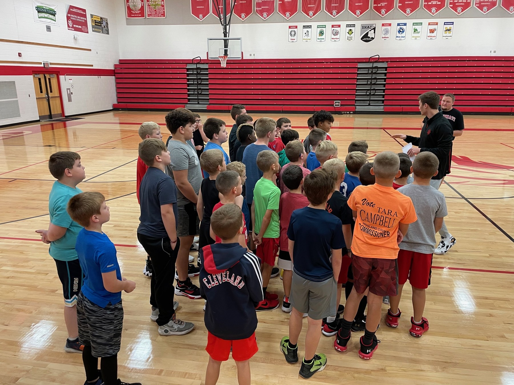
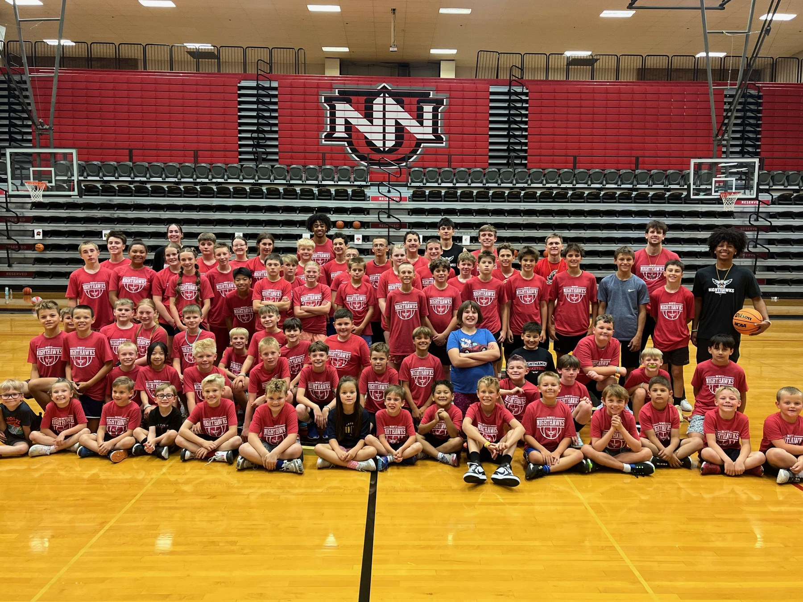
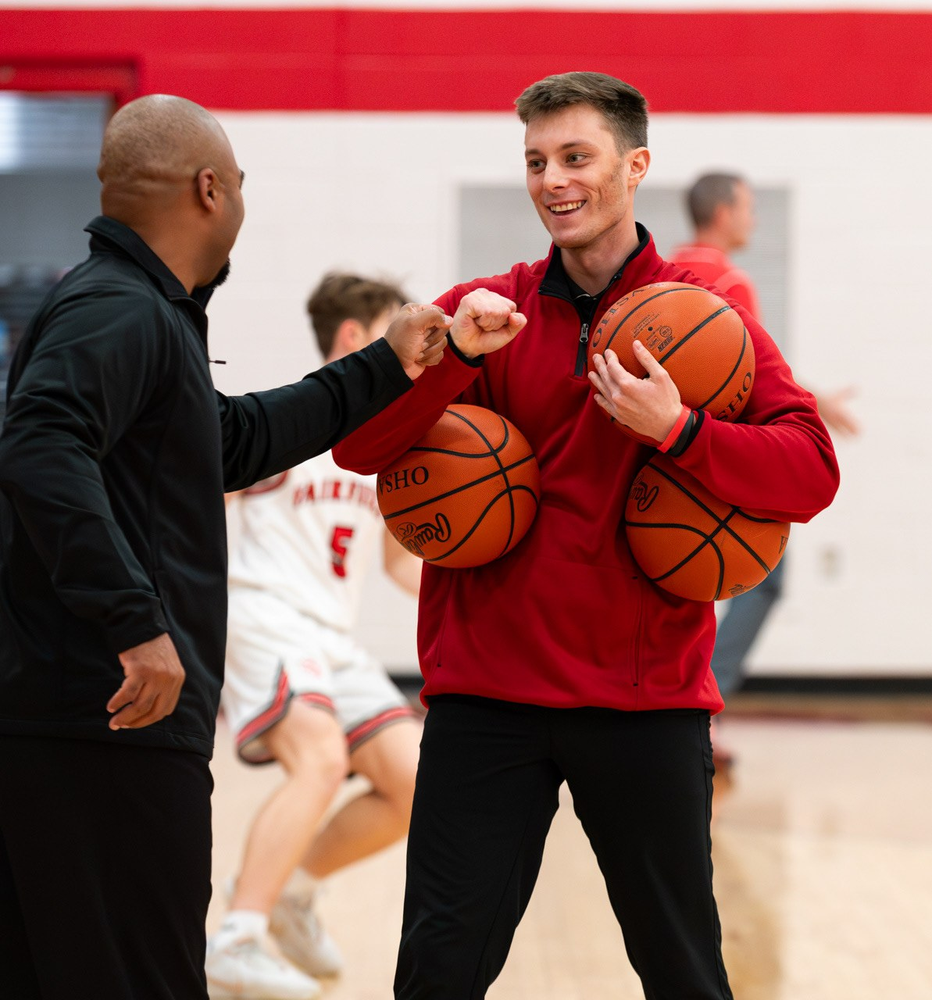
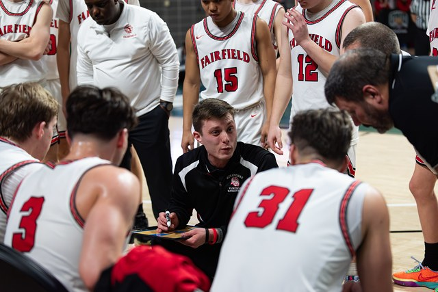
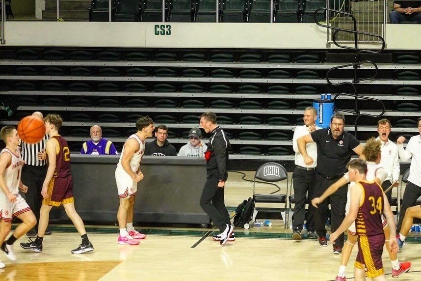
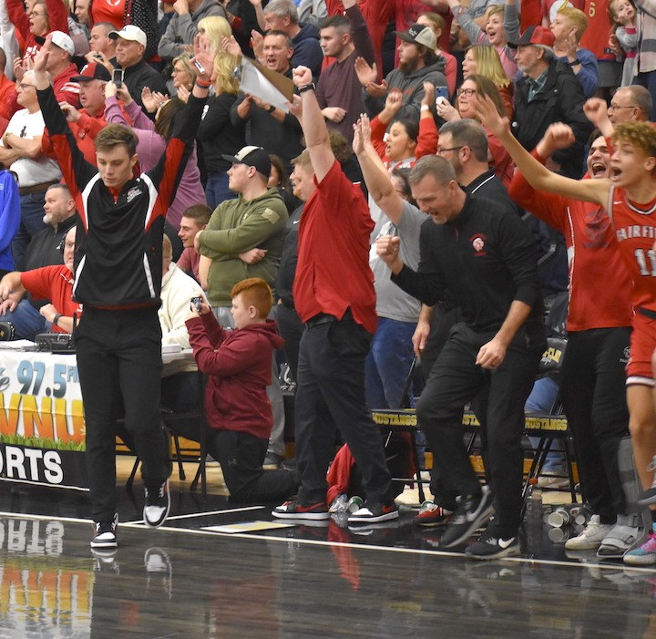
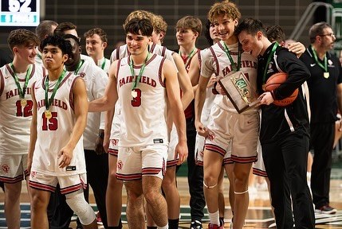

Individual Training
Focused skill work built around the athlete: shooting, footwork, ball handling, finishing, reads, decision-making and confidence.
Request a session →Basketball Development • Training • Camps • Mentorship
Purposeful basketball development built to improve the player, challenge the competitor, and impact the person.
Made Di11erent uses basketball as a platform for skill development, competition, discipline, confidence, mentorship and purpose. The standard is bigger than a workout.
Professional basketball development with game-transferable teaching, competitive reps and intentional feedback.
Focused skill work built around the athlete: shooting, footwork, ball handling, finishing, reads, decision-making and confidence.
Request a session →Competitive, game-like sessions that add decision-making, pressure and live reads while keeping individual development at the center.
Join a group →Customized development for teams, programs and organizations — skill work, offensive concepts, competitive standards and culture.
Request team training →Basketball opens the door. Character, discipline, faith, leadership and accountability help athletes grow beyond the court.
Learn more →
Every session should have a reason behind it. Athletes are taught how to execute skills, when to use them, and how to compete when the game gets uncomfortable.
Youth camps, skill clinics, team camps and customized events designed around development, competition and relationships.

Made Di11erent camps and clinics combine detailed teaching, competitive environments and mentorship. Join the camp list to receive upcoming dates, locations and registration information.
Camp Registration
Want Made Di11erent at your school, church or organization?
Customized camps and clinics can be built around your athletes and goals.

Quentin Williams brings experience as a collegiate basketball player, high school head coach, AAU coach, skills trainer, strength and performance coach, educator and college basketball coach.
His coaching career has been built around relationships, player development, competitive standards and helping young people grow through the game.
Made Di11erent is rooted in the belief that gifts have purpose, relationships matter, and development should change more than a player's game.
Former players describe the standards, relationships, accountability and purpose behind Coach Q's approach.
He pushes so hard because he cares so much. At a certain point it’s not even about wins or success anymore; it’s about building character and becoming better men.
Coach Q has been that man for me. Six years of loyalty, lessons, and brotherhood. He demanded discipline, accountability, and hard work, but more than anything he built a brotherhood.
Quentin is more than a coach to me. He has been a role model that I look up to every day and someone I consider to be like an older brother. He is a great man and an even greater leader.
Coach Q never let us take the easy way out. He made us look in the mirror, own our mistakes, and become better every single day—not just as players, but as men.
It’s rare these days for coaches to make the impression on their players that he did and continues to do. He’s poured his heart and soul into his teams and never let us get away with mediocrity.
It’s not hard to see that he pushes his players because he truly believes in them and wants the best for them. Not just in sports but in life.
He was someone we trusted, someone we looked up to, and someone we knew would always have our backs. If something was wrong, he was someone we could go to without hesitation.




Submit a training inquiry for individual, small group, team training, camps or clinics. Availability, recommended training options and pricing will be provided after the inquiry.
Individual • Small Group • Team • Camps
Pricing is shared after your training inquiry so we can recommend the best option for the athlete.
Request Training Tell us about the athlete and what you are looking for. We will follow up with availability and training options.Training. Camps. Clinics. Team Development. Mentorship.